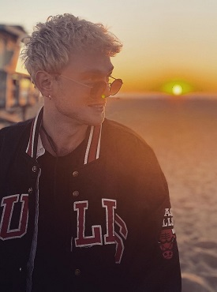

The Vamps are a British pop rock band consisting of Bradley Simpson, James McVey, Connor Ball and Tristan Evans.[2] They formed in 2012 and signed to Mercury Records (now Virgin EMI Records) in the November of that year.[3] In 2017, they scored their first number 1 on the Official UK Albums Chart with Night & Day (Night Edition). Their first two albums, Meet The Vamps and Wake Up are both certified Gold in the UK. The Vamps have also launched their own record label, Steady Records, and they are working in partnership with EMI/Universal. The first act signed was American band The Tide.[4] In 2018, guitarist McVey participated in the eighteenth series of I'm a Celebrity...Get Me Out of Here! and finished in fifth place. They have continuously toured worldwide since their debut in 2012, and they are the first band to headline London's O2 Arena five years in a row.
On 22 July 2013, the band uploaded their first original song, "Wildheart" (later re-titled "Wild Heart"), onto their YouTube account; the video received over 46,000 views within the first two days.[7][8] On 6 August 2013, they released the music video for their debut single "Can We Dance", which received over 1 million views within two weeks.[9] "Can We Dance" was released on 29 September 2013 and debuted at number two on the UK Singles Chart on 6 October 2013; beaten to number one by OneRepublic's "Counting Stars",[10] which sold 1,250 copies more.[11] On 19 November 2013, the band announced that they would release their debut album around Easter.[12] On 22 November 2013, the Vamps announced that their second single would be "Wild Heart".[13] The song received its first airplay three days later[14] and was released on 19 January 2014, peaking at number three on the UK Singles Chart the following week.
Bradley is the lead singer of the group. He was discovered on Youtube by James Mcvey who is also part of the band. The band was signed by Mercury records in late 2012. In 2013 the band supported Mcfly on their Memory lane tour. has an older sister, Natalie Simpson and a dog named Jesse.He Can play the piano, guitar and drums.Bradley grew up in Birmingham and was born in The Royal Town of Sutton Coldfield, United Kingdom. His favorite band is Artic Monkeys.He is in a band with James McVey, Connor Ball, and Tristan Evans. He is the lead singer for The Vamps. He has a sister, Natalie Simpson. He started with the band in 2012 and is still going now. With their pop rock sound, they gain a lot of attention.
Connor Ball is a member of the British band, The Vamps, along with Bradley Simpson, James McVey, and Tristan Evans. The bassist was originally putting up covers on YouTube, just like fellow band members Bradley Simpson and James McVey. He was the last to join the group. Bradley Simpson, James McVey, and Tristan Evans met Connor Ball via a mutual friend and soon formed the band, The Vamps
James Daniel McVey is a member of The Vamps along with Bradley Simpson, Connor Ball, and Tristan Evans. He is the vocalist and guitarist in the band. McVey met band member Bradley Simpson via YouTube in 2011 and they have been working on their debut album since. Together they formed a group and are formed the band The Vamps with Tristan Evans and Connor Ball.
James was dating a model called Kirstie Brittain, but eventually broke up when she was caught in an instagram photo with another man.
James later started dating Game of Thrones actress Sophie Turner. However, the two split up due to unknown reasons after a small Twitter fight.
James and Kirstie made up and eventually got back together and have been ever since. They are now engaged.
Tristan Oliver Vance Evans is from Exeter, Devon, and is a member of The Vamps along with Bradley Simpson, James McVey, and Connor Ball. He is the drummer and backing vocalist in the band. He also acts as a producer for the band, particularly with their covers.
In 2012, Bradley Simpson and James McVey met Tristan Evans through Facebook. The trio then met Connor Ball via a mutual friend and soon formed the band, The Vamps.
